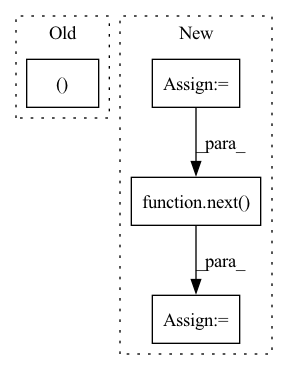

Pattern ID :29809

Before Change
def visualize_4_way(cfg):
// MODELS
seg_model_path, pred_rgb_model_path, pred_mask_model_path, pred_colorized_mask_model_path = model_paths
seg_model = torch.load(cfg.seg)
pred_rgb_model = torch.load(cfg.pred_rgb)
pred_mask_model = torch.load(cfg.pred_mask)
After Change
test_data = SynpickVideoDataset(data_dir=data_dir, vid_type=("rgb", 3), num_frames=VIDEO_TOT_LENGTH,
step=4, allow_overlap=VID_DATA_ALLOW_OVERLAP)
test_loader = DataLoader(test_data, batch_size=1, shuffle=True, num_workers=4)
iter_loader = iter(test_loader)
with torch.no_grad():
for i in tqdm(range(10)):
frames = next(iter_loader).to(DEVICE) // [1, T, 3, h, w]
frames_vis = postprocess_img(frames.squeeze(dim=0)) // [T, 3, h, w]
input = frames[:, :VIDEO_IN_LENGTH] // [1, t, 3, h, w]
pred_rgb = pred_rgb_model.pred_n(input, pred_length=VIDEO_PRED_LENGTH)
pred_rgb = torch.cat([input, pred_rgb], dim=1) // [1, T, 3, h, w]
pred_rgb_vis = postprocess_img(pred_rgb.squeeze(dim=0)) // [T, 3, h, w]
pred_rgb = torch.stack([seg_model(pred_rgb[:, i]) for i in range(pred_rgb.shape[1])], dim=1)
pred_rgb = pred_rgb.argmax(dim=2).squeeze() // [T, h, w]
pred_then_colorized_vis = colorize_semseg(postprocess_mask(pred_rgb), num_classes=SYNPICK_CLASSES).transpose(0, 3, 1, 2) // [T, 3, h, w]
frames_seg = torch.stack([seg_model(frames[:, i]) for i in range(frames.shape[1])], dim=1).argmax(dim=2) // [1, T, 1, h, w]
frames_seg_in = torch.stack([(frames_seg == i) for i in range(SYNPICK_CLASSES)], dim=2).float() // [1, T, c, h, w] one-hot float
input_seg = frames_seg_in[:, :VIDEO_IN_LENGTH] // [1, t, c, h, w]
pred_mask = pred_mask_model.pred_n(input_seg, pred_length=VIDEO_PRED_LENGTH).argmax(dim=2) // [1, n, 1, h, w]
pred_mask = torch.cat([input_seg.argmax(dim=2), pred_mask], dim=1).squeeze() // [T, h, w]
pred_mask_vis = colorize_semseg(postprocess_mask(pred_mask), num_classes=SYNPICK_CLASSES).transpose(0, 3, 1, 2) // [T, 3, h, w]
frames_colorized = colorize_semseg(postprocess_mask(frames_seg.squeeze()), num_classes=SYNPICK_CLASSES)
frames_colorized_vis = frames_colorized.transpose(0, 3, 1, 2) // [T, 3, h, w]
input_colorized = preprocess_img(frames_colorized[:VIDEO_IN_LENGTH]).to(DEVICE).unsqueeze(dim=0) // [b, t, 3, h, w]
colorized_then_pred = pred_colorized_mask_model.pred_n(input_colorized, pred_length=VIDEO_PRED_LENGTH)
In pattern: SUPERPATTERN
Frequency: 5
Non-data size: 4
Instances
Fragment ID: 88272162
Project Name: ais-bonn/vp-suite
Commit Name: 13016d4ab8ba4f8e7ee087155a6c5171f4d00ba3
Time: 2021-08-02
Author: boltres@ais.uni-bonn.de
File Name: scripts/visualize_4_way.py
M Class Name: AnonimousClass
N Class Name: AnonimousClass
M Method Name: visualize_4_way(1)
N Method Name: visualize_4_way(1)
M Parent Class:
N Parent Class:
M File Name: scripts/visualize_4_way.py
N File Name: scripts/visualize_4_way.py
M Start Line: 16
M End Line: 73
N Start Line: 17
N End Line: 74
'>
Before Change
def testCifar100CorruptedDatasetShape(self):
super(Cifar100CorruptedDatasetTest, self)._testDatasetSize(
ub.datasets.Cifar100CorruptedDataset,
(32, 32, 3),
splits=["test"],
corruption_type="brightness",
severity=1)
After Change
split=split,
corruption_type="brightness",
severity=1)
dataset = dataset_builder.load(batch_size=bs).take(1)
element = next(iter(dataset))
features = element["features"]
labels = element["labels"]
features_shape = features.shape
labels_shape = labels.shape
self.assertEqual(features_shape, (bs, 32, 32, 3))
self.assertEqual(labels_shape, (bs,))
'>
Fragment ID: 88272167
Project Name: google/uncertainty-baselines
Commit Name: e71008f3b738c27c13f65a18058ce978d3dd596a
Time: 2021-06-15
Author: znado@google.com
File Name: uncertainty_baselines/datasets/cifar100_corrupted_test.py
M Class Name: Cifar100CorruptedDatasetTest
N Class Name: Cifar100CorruptedDatasetTest
M Method Name: testCifar100CorruptedDatasetShape(1)
N Method Name: testCifar100CorruptedDatasetShape(1)
M Parent Class: parameterized.TestCase
N Parent Class: parameterized.TestCase,ub.datasets.DatasetTest
M File Name: uncertainty_baselines/datasets/cifar100_corrupted_test.py
N File Name: uncertainty_baselines/datasets/cifar100_corrupted_test.py
M Start Line: 28
M End Line: 33
N Start Line: 27
N End Line: 43
'>
Before Change
assert not args.shuffle
e, gmaker = training._setup_example_provider_and_grid_maker(args)
dims = gmaker.grid_dimensions(e.num_types())
batch_size = 2
After Change
assert not args.shuffle
e = training._setup_example_provider(args.trainfile, args)
gmaker = training._setup_grid_maker(args)
dims = gmaker.grid_dimensions(e.num_types())
batch = next(e)
grid = torch.zeros((batch_size, *dims), device=device)
assert not any(grid[grid > 0.0])
'>
Fragment ID: 88272151
Project Name: rmeli/gnina-torch
Commit Name: 7a941e0e04295d926f71dfa93c12b709aece14fb
Time: 2021-11-03
Author: rocco.meli@biodtp.ox.ac.uk
File Name: gnina/tests/test_training.py
M Class Name: AnonimousClass
N Class Name: AnonimousClass
M Method Name: test_grid_maker(3)
N Method Name: test_grid_maker(3)
M Parent Class:
N Parent Class:
M File Name: gnina/tests/test_training.py
N File Name: gnina/tests/test_training.py
M Start Line: 111
M End Line: 122
N Start Line: 126
N End Line: 146
'>
Before Change
)
// Extract xvectors from a validation sample
valid_x, valid_y = next(iter(valid_set.get_dataloader()))
print("Extracting Xvector from a sample validation batch!")
xvectors = ext_brain.extract(valid_x)
print("Extracted Xvector.Shape: ", xvectors.shape)
After Change
)
// Extract xvectors from a validation sample
extraction_loader = sb.data_io.dataloader.make_dataloader(
hparams["valid_data"], **hparams["loader_kwargs"]
)
batch = next(iter(extraction_loader))
print("Extracting Xvector from a sample validation batch!")
xvectors = ext_brain.extract(batch.wav.data, batch.wav.lengths)
print("Extracted Xvector.Shape: ", xvectors.shape)
'>
Fragment ID: 88272164
Project Name: speechbrain/speechbrain
Commit Name: d656bc6618227a593465ff1a507ec955172eb4ac
Time: 2020-12-20
Author: aku.rouhe@aalto.fi
File Name: recipes/minimal_examples/neural_networks/Xvector/example_xvector_experiment.py
M Class Name: AnonimousClass
N Class Name: AnonimousClass
M Method Name: main(0)
N Method Name: main(0)
M Parent Class:
N Parent Class:
M File Name: recipes/minimal_examples/neural_networks/Xvector/example_xvector_experiment.py
N File Name: recipes/minimal_examples/neural_networks/Xvector/example_xvector_experiment.py
M Start Line: 91
M End Line: 106
N Start Line: 84
N End Line: 120
'>
Before Change
assert not args.shuffle
e, gmaker = training._setup_example_provider_and_grid_maker(args)
batch_size = 2
After Change
def test_example_provider(trainfile, dataroot, device):
// Do not shuffle examples randomly when loading the batch
// This ensures reproducibility
batch_size = 2
args = training.options(
[
trainfile,
"-d",
dataroot,
"--no_shuffle",
"--affinity_pos",
"1",
"-g",
str(device),
"--batch_size",
str(batch_size),
]
)
assert not args.shuffle
e = training._setup_example_provider(args.trainfile, args)
batch_size = 2
batch = next(e)
assert len(batch) == batch_size
labels = torch.zeros(batch_size, device=device)
'>
Fragment ID: 88272152
Project Name: rmeli/gnina-torch
Commit Name: 7a941e0e04295d926f71dfa93c12b709aece14fb
Time: 2021-11-03
Author: rocco.meli@biodtp.ox.ac.uk
File Name: gnina/tests/test_training.py
M Class Name: AnonimousClass
N Class Name: AnonimousClass
M Method Name: test_example_provider(3)
N Method Name: test_example_provider(3)
M Parent Class:
N Parent Class:
M File Name: gnina/tests/test_training.py
N File Name: gnina/tests/test_training.py
M Start Line: 69
M End Line: 88
N Start Line: 78
N End Line: 102